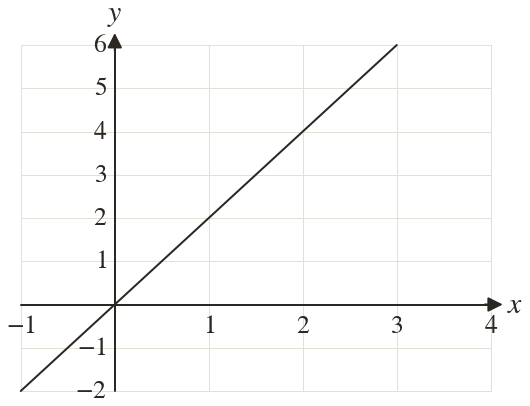
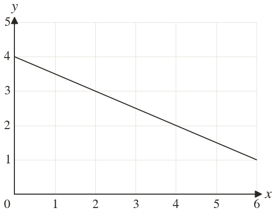

Westonbirt Maths · Line Segments, Parallel and Perpendicular Lines
Rearranging and Reading Straight-Line Equations
Name: ______________________ Date: ____________
1
Find the equation of the line.
2
Find the equation of the line.
3
A line crosses the axes at and Find its equation.
4
On a graph, the x-axis goes up in steps of and the y-axis in steps of units. A line through rises squares for every square across. Find its equation.
5
Does the line through with gradient pass through ? Explain.
Ext
A line through with gradient crosses the x-axis at Find

